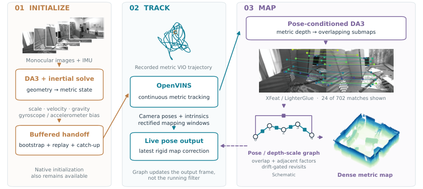
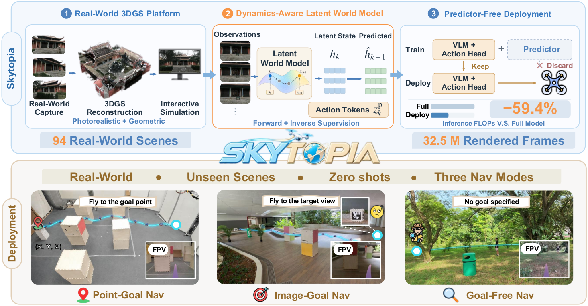
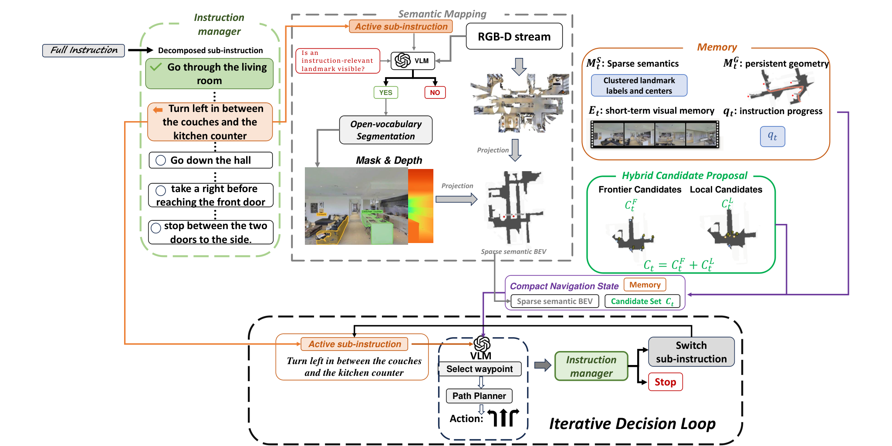
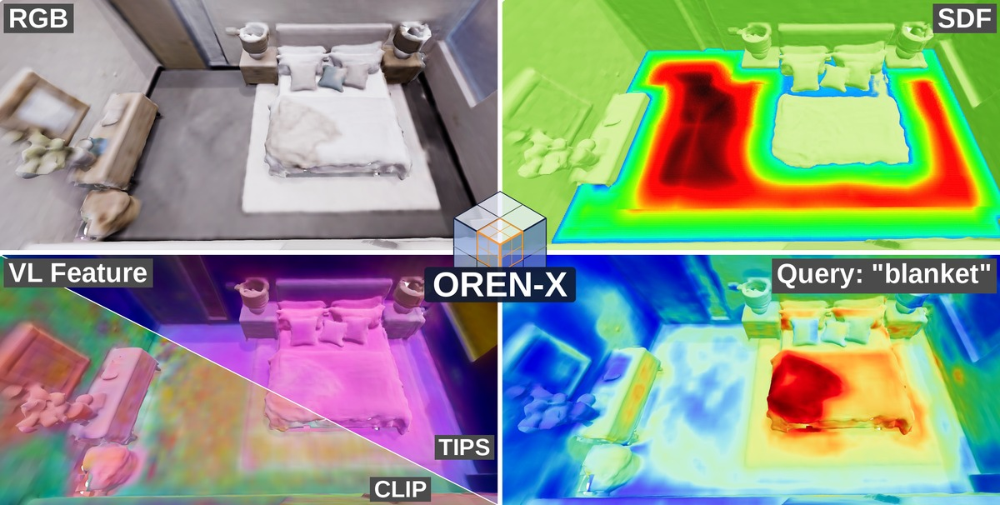

Executive Summary
前馈 3D 正从“替代几何后端”转向“为经典估计器提供条件与先验”。DAVIO 的结果支持一个较稳健的工程路径：用 DA3 同时服务初始化和 pose-conditioned depth，再把惯性状态、尺度与闭环图优化留在可解释的 VIO/图优化链路中。EuRoC Machine Hall 的初始化四分位时间由 4.68 s 降到 2.30 s，但 Vicon 房间并非全面受益，说明域分布与运动条件仍决定收益。
表征解耦比“一个表示包打天下”更值得关注。Dual Covariance GS-SLAM 为渲染和跟踪分离高斯协方差；OREN-X 在统一八叉树索引内分别承载 SDF、occupancy、radiance 与视觉语言特征；SparseNav 则把稠密几何 BEV 与稀疏语义地标分开。它们共同指向：共享坐标和存储可以统一，但不同任务的统计形状、更新频率和误差模型不应被强行共享。
具身导航的训练时世界模型与部署时记忆正在分化。Skytopia 用 world model 辅助表征学习，部署时丢弃预测器以节省 59.4% FLOPs 和 52% 延迟；SparseNav 保留持久几何地图，只按需调用 VLM 生成稀疏地标。两者分别解决训练信号与在线可扩展性，不能简单合并成“端到端世界模型已经取代地图”。
Deep-read Papers
| 论文 | 系统/框架图 | 解决的问题 | 方法 / 结构 | Insight 与数学知识 | 实验与效果 | 复现与启发 | 阅读证据 |
|---|---|---|---|---|---|---|---|
| DAVIO VIOFeedForward 3D |
 Fig. 2 pipeline；caption 与 Method 对齐，已视觉确认。 |
单目 VIO 冷启动慢、纯视觉深度尺度漂移，以及前馈 3D 模型在在线建图中缺少惯性约束和长程一致性。 | 五帧图像与预积分 IMU 做线性初始化并加鲁棒门控；OpenVINS 缓冲交接。DA3 以相机位姿为条件估计深度，沿视线做尺度修正；子图之间用保持重力方向的位姿图与漂移门控重访。 | 关键不是直接采用网络位姿，而是用网络几何缩短可观测性建立时间。初始化线性系统把重力、速度、尺度统一求解；尺度校正沿 ray 处理，避免把各向异性的深度误差误当作刚体平移；图优化只保留重力一致自由度。 | EuRoC 132 个 10 s 窗：OpenVINS 成功 111/132、Tq 3.87 s；DAVIO 109/132、2.66 s。Machine Hall：4.68→2.30 s、54/67→56/67；Vicon 则 3.15→4.50 s、57/65→53/65。ORI 可比位姿的在线 DAVIO mean 0.080 m、F@10 0.75；未条件化为 0.219 m、0.38。消融去 pose conditioning 后三序列 F@10 从 .685/.520/.550 降至 .539/.423/.469。 | 建议把 DA3 接口设计成可替换的“初始化/深度先验服务”，保留原始 VIO 作为失效回退。复现应分别统计 Machine Hall 与 Vicon，不能只报总体均值；重访对个别表面指标有负作用，应记录闭环触发与误差传播。 | 全文级：arXiv HTML 与 8 页 PDF；阅读 Intro、Method、Experiments、Ablations、Conclusion；核对 Fig.2。 |
| Dual Covariance Gaussian Splatting SLAM 3DGS-SLAMRGB-D |
论文 Fig.2 caption 明确为 system overview，但 arXiv HTML 未暴露可单独可靠下载的总览图资产；本期不嵌未经视觉确认的截图。 | 同一高斯协方差同时承担渲染与几何配准时，视觉外观需要的扩张会破坏跟踪几何，尤其在低纹理和深度噪声场景。 | 每个高斯保留渲染协方差 Σr 与依据 RGB-D 传感器不确定性构造的跟踪协方差 Σt；KLT 角点锚定到高斯，为切平面补充观测；在 SE(3) 上用 LM 联合最小化 G-ICP 与图像残差。 | Σt 是把像素/深度噪声经反投影 Jacobian 传播到 3D 的局部不确定性，而 Σr 为可微渲染服务。KLT 约束补足纯点面匹配在平面内的秩缺失；双协方差因此是“任务条件化统计量”，不是多存一份形状参数。 | TUM RGB-D、ScanNet、Replica 与自采 D435i，RTX 4090 上约 60 fps。关键消融六场景 ATE（cm）：共享协方差在 fr3/nos_tex 达 194.96，完整模型 1.67；自采 0169 从 19.32 降到 6.89。只加 KLT 并不稳定（fr3/office 11.73 vs 完整 2.23），说明几何协方差与特征约束需配套。 | 可先把传感器噪声传播和 KLT tangent constraint 接到现有 3DGS 跟踪器，不必改渲染端。论文明确缺少长期 BA，且高深度噪声/室外远距仍是边界。 | 全文级：arXiv HTML 完整阅读；大 PDF 未由本地 PDF 端点完整解析。覆盖 Method、Experiments、Ablation、Limitations；系统图仅 caption 级确认。 |
| When Wider Views Fail FeedForward 3DStress test |
无系统/框架图；论文主体是视角跨度受控实验与重建可视化，按模板不把结果图当系统图嵌入。 | 前馈多视图 3D 方法通常在有限视角上评测，尚不清楚视角跨度增大时是信息增加还是匹配/融合崩溃。 | 两处 Google Earth Studio 城市场景，各取 10 张图并控制 30°–360° 角跨度，共 42 组；比较 VGGT、Pi3X、VGGT-Ω。用 70-view VGGT-Ω 生成伪参考，建筑分割后先单次 Sim(3) 对齐，再 trimmed ICP；重复点保留。 | 控制变量揭示“更宽 baseline”并非单调增益。指标为归一化 Chamfer/EMD 与 τ=0.01D 的 precision/recall/F1；但角跨度与相邻图重叠共变，且用同家族模型造伪 GT，会使误差归因与模型比较带偏。 | Scene I：Pi3X F1 85.59%（30°）降到 13.54%（135°）、14.87%（360°）；VGGT 360° 为 23.69%；VGGT-Ω 360° 仍 86.05%。Scene II 360°：Pi3X/VGGT/VGGT-Ω 分别 15.26%/9.44%/94.74%，对应 CD 1.86048/0.75992/0.00382。 | 应把角跨度、最小重叠、闭环长度设为独立评测轴，并增加真实相机位姿和独立 LiDAR/mesh GT。当前只有两个场景，不能据此宣布模型普遍具备 360° 鲁棒性。 | 全文级：arXiv HTML 完整阅读；大 PDF 未由本地端点完整解析。覆盖协议、指标、全表结果与 Limitations。 |
| Skytopia World modelRobot navigation |
 Fig.1 platform + training/deployment pipeline；已视觉确认。 |
真实机器人导航数据昂贵，而传统 simulator 的视觉域差距和 world model 部署算力又限制泛化。 | 94 个真实 3DGS 场景加刚体物理；action-conditioned latent world model 以冻结视频编码器特征为目标，联合前向 L1 下一潜变量、逆向已执行命令和 conditional flow matching 动作头。预测器仅用于训练，部署丢弃。 | 前向损失约束“动作后会看到什么”，逆向损失约束潜变量保留可控动态；独立 action token 避免视觉表征吞噬控制信息。flow matching 学习连续动作分布，部署时保留 policy head 而不必滚动世界模型。 | 每模式 200 episodes/seed、3 seeds；统一数据重训 BC、ACT、NoMaD、ViNT、OmniVLA、NWM、NavMorph。仿真 SR：point/image/goal-free 57.8/66.0/49.0。真实零微调三环境各 20 次：point indoor 55%，image 平均 56.7%，goal-free 41.7%。action-only 37.5/42.8/29.2；去 inverse 51.3/56.7/43.3；去 forward 42.7/51.5/35.8。 | 适合把可删预测器当训练正则器，而非部署依赖。94 场景仍以静态 3DGS 为主；作者明确缺少持久空间记忆，动态障碍和时间变化场景未验证。 | 全文级：arXiv HTML + 19 页 PDF；覆盖 Method、Datasets、Baselines、Ablations、real-world、Limitations；核对 Fig.1。 |
| SparseNav VLNPersistent map |
 Fig.2 overall framework；caption、数据流与 Method 已对照，视觉确认。 |
VLN 在线调用 VLM 成本高、短期上下文容易遗忘，纯语义地图又会把无关对象持续累积。 | 持久几何 BEV + 稀疏地标记忆；根据当前 sub-instruction 主动查询，VLM 判断可见性后用 SAM3 开放词汇分割，mask-depth 投影为地标；frontier 与局部候选混合，VLM 选 waypoint，经典规划器执行。 | 语义记忆是受指令条件化的稀疏集合，不是每帧稠密分割。sub-instruction 相当于 query key；几何地图负责可达性，语义地标负责语言指向，从而把 VLM 调用从连续感知转成事件触发。 | R2R-CE val unseen：SR 42.8、SPL 35.2、NE 5.96、OSR 53.4；RxR-CE：40.7/24.1/7.82/nDTW 48.6。语义消融 SR：无语义 34.6、dense continuous 36.7、dense on-demand 38.8、instruction-semantic continuous 40.2、完整 42.8。候选消融 local-only 29.1，frontier 35.2，frontier+forward 37.4，完整 42.8。 | 可复用“稠密几何低频更新 + 指令相关语义按需写入”范式。实机仅 Unitree Go2 的多室内定性展示，VLM latency、规则候选与小规模实机是主要边界。 | 全文级：arXiv HTML + 9 页 PDF；覆盖架构、benchmark、两组消融、实机与 Limitations；核对 Fig.2。 |
| OREN-X Neural mappingVision-language |
 Fig.1 “at a glance”：RGB、SDF、VL encoding/query；已视觉确认。 |
机器人在线地图通常为几何、占据、外观和语言分别维护表示，导致索引、内存与训练管线重复。 | 共享八叉树索引/存储，在顶点上联合承载 SDF、occupancy、radiance 与 VL；对每个顶点修正 Adam bias；用在线字典压缩高维 VL 特征，并直接在 code space 做 cosine/relevancy query。 | 统一的是空间支持与优化调度，不是把所有模态压成同一变量。在线字典近似把 VL feature 写成少量 basis 的线性组合，查询可避免完整解码；顶点级 Adam 时钟修正解决稀疏更新次数不同造成的偏差。 | Replica/TUM：四模态 32.37 FPS、1.01 GiB；仅 SDF 80.06 FPS、0.28 GiB。对照 LatentAM 34.11 FPS/8.66 GiB，OnlineLangSplat 1.79/11.32，LangSplatV2 0.42/13.18，nvblox 73.66/1.00。在线 dense dictionary：256.2→69.3 MB，mAP 45.87→49.02；TopK4 仅 6.8 MB 但 mAP 32.74。 | 适合作为统一 map server，而非 SLAM 前端替代。论文默认位姿/深度输入，未展示长期自主机器人集成；本期没有找到与 OREN-X 对应的公开实现，旧 OREN 仓库不能作为其代码证据。 | 全文级：arXiv HTML + 9 页 PDF；覆盖表示、优化、压缩、完整实验与 ablation；论文无独立 Limitations 小节，按 Conclusion/实验范围界定；核对 Fig.1。 |


Repo Deep Dives
| Repo | 目标与能力 | 代码结构证据 | 依赖 / 硬件 | 成熟度判断 | 领域关系 |
|---|---|---|---|---|---|
| jiejie567/updown-sc 检查时 13★ / 0 forks / 1 issue；MIT；2026-09-25 最近推送。 |
ROS-free C++ 的 gravity-canonicalized 上/下包络 Scan Context，实现室内 LiDAR place recognition、描述子数据库和跨序列评测。 | updown_sc/CMakeLists.txt；include/scan_context.hpp；核心 src/scan_context.cpp 约 1680 行；配置含 16 rings、60 sectors、30 m、0.25 m、上下层权重 .3/.7、候选 topK 100、yaw topK 3。另有 rebuild、cross-sequence、convert、subset 工具，V1–V7 数据库兼容、baselines、实验协议、数据包校验和、CI 与 release_check。 |
C++17、Eigen3、PCL、yaml-cpp；不依赖 ROS。需要论文数据/点云才能复现实验，本期未安装编译。 | 小众但工程结构相对完整：许可证、CI、release checklist 与数据 provenance 齐全；stars 只能说明初期关注度，不能替代精度复现。 | 直接对应 Supplemental 的 UpDown-SC，适合室内回环候选生成；不负责后端 pose graph。 |
| andreagenovese/quacknav 0★ / 0 forks；Apache-2.0；2026-09-26 最近推送。 |
面向小型轮式“duck”平台的 Rust 导航栈：定位/子图/位姿图、探索、回家、悬崖保护、守护进程和 JSON-RPC 工具。 | Rust workspace（1.89 / edition 2024），crates 包括 maploc、quack-duck、quack-nav；quack-navd 作为 daemon。maploc 管理 submaps、pose graph、loop closer、optimizer、render/persist；导航侧有 cliff guard、planner、exploration、homecoming、map daemon、12 个 RPC tools、systemd service 与 paper twin scripts。 |
依赖 git 版 Pollen/microduck 等硬件生态；文档结果来自模拟/回放，未见实体 duck 实验。需要 Rust toolchain 与对应硬件/仿真环境，本期未构建。 | 代码面广但项目极新。文档称 turn-in-place 预览分支 11 sessions/51 journeys 零跌落、go_to 46/51；另报 11 个回放 wall error 均值 6.9→4.6 cm、最差轨迹 1.95→0.16 m。均未由本地运行复验；release 后曾修 resumed-session bug。 | 机器人定位、建图与自主导航工程；提供系统集成参考，但当前不能视为经过实机验证的成熟 SLAM 产品。 |
| IMRL/Free-Init 7★ / 0 forks；未标注 license；2026-09-25 最近推送。 |
为 Free-Init 论文提供项目说明、图片与数据链接，并把实现入口指向 IMRL/FMCW-LIO 的初始化模块。 | 仓库本身仅 README 与图片，没有训练/推理/构建入口或核心算法源码；README 链接 Hugging Face/Google Drive 数据并声称初始化输出超过 10 kHz。 | 本仓库无可构建依赖；实际实现、FMCW LiDAR/IMU 数据与编译要求需转到 FMCW-LIO 另行审计。 | 属于 release/index page，不是独立可运行 repo。stars 与 README 声称不能证明算法已在这里开源或可复现。 | 高速 Doppler LiDAR–IMU 初始化；后续应追踪实现所指模块和数据许可证。 |
ExistentialRobotics/oren 是较早 OREN 项目，不能据此验证 OREN-X。Quantitative Experiment Highlights
| 来源 | 数据集 / 场景 | 指标 | 结果 | 解释边界 |
|---|---|---|---|---|
| DAVIO | EuRoC，132 个 10 s 初始化窗口 | 成功数、first pose time Tf、quality time Tq | OpenVINS 111/132，3.65/3.87 s；DAVIO 109/132，2.43/2.66 s。 | 总体更快但成功数略低；Machine Hall 受益，Vicon 退化，不能只看汇总。 |
| DAVIO mapping | ORI 可比估计位姿 | mean error / F@10 | unconditioned 0.219 m / .38；DAVIO online .080 m / .75；ScaRF mapper（同 VIO）.084 m / .69；MASt3R-Fusion .194 m / .67；VGGT-SLAM2 .161 m / .50。 | 后两者使用 global Sim(3)；协议和在线性不同，不宜解读为统一排行榜。 |
| Dual Covariance GS-SLAM | TUM fr3/nos_tex 与自采 0169 | ATE RMSE（cm） | 共享协方差 194.96 / 19.32；完整双协方差 + KLT 1.67 / 6.89。 | 选择的是困难场景消融；全数据均值与其他论文并非同协议。 |
| When Wider Views Fail | Scene II，360°，10 views | F1 / normalized CD | Pi3X 15.26% / 1.86048；VGGT 9.44% / .75992；VGGT-Ω 94.74% / .00382。 | 伪参考由 VGGT-Ω 70 views 生成，存在同家族偏置；仅两场景。 |
| Skytopia | 94 个 3DGS 场景；每模式 200 episodes/seed × 3 | SR（point/image/goal-free） | 完整 57.8/66.0/49.0；action-only 37.5/42.8/29.2；去 inverse 51.3/56.7/43.3；去 forward 42.7/51.5/35.8。 | 同一数据重训基线是优点；静态场景占主，动态环境未覆盖。 |
| Skytopia deployment | 3 个真实环境，每任务每环境 20 trials，零微调 | 成功率 | point-goal indoor 55%；image-goal 平均 56.7%；goal-free 41.7%。去预测器节省 59.4% FLOPs、52% latency。 | 样本规模有限；不是长期自主部署统计。 |
| SparseNav | R2R-CE val unseen | SR / SPL / NE / OSR | 42.8 / 35.2 / 5.96 / 53.4；无语义 SR 34.6，dense continuous 36.7，完整 42.8。 | 跨论文方法的训练数据和 VLM 不同；实机部分缺少大样本量化。 |
| OREN-X | 四模态在线建图 | FPS / GPU memory | 32.37 FPS / 1.01 GiB；LatentAM 34.11 / 8.66，OnlineLangSplat 1.79 / 11.32，LangSplatV2 .42 / 13.18，nvblox 73.66 / 1.00。 | 各基线支持的模态与输出不同；不能只以 FPS 决定系统优劣。 |
| OREN-X VL compression | Replica VL query | dictionary memory / mAP | full features 256.2 MB / 45.87；online dense 69.3 MB / 49.02；TopK4 6.8 MB / 32.74；TopK48 23.3 MB / 45.38。 | 压缩率与准确率存在非单调折中；完整机器人任务效果未测。 |
Supplemental Tracking Papers
| 论文 | 方向关系 | 解决的问题 | 方法 / 结构 | Insight 与数学知识 | 实验 | 证据级别与后续动作 |
|---|---|---|---|---|---|---|
| FMCW-LIO | Doppler LiDAR–IMU odometry | 运动畸变、动态点与退化环境。 | Doppler 速度 + IMU 的连续运动补偿、流形观测更新与动态点拒绝。 | 径向速度直接约束 twist，可在几何退化时补充速度可观测性。 | 摘要称在动态/退化场景有效，未给可核对完整数表。 | 摘要级，未深读全文；后续与 Free-Init 共读并复现实验脚本。 |
| Free-Init | LiDAR–IMU initialization | 不依赖扫描去畸变、激励或点对应的快速初始化。 | Doppler 与 IMU 约束直接估计初始化状态，声称 >10 kHz 输出。 | 用测得径向速度代替跨帧几何对应，改变初始化的可观测性来源。 | 摘要/README 宣称多数据有效，未核对全文数表。 | 摘要 + README 级；需审计 FMCW-LIO 实际模块，Free-Init repo 本身无源码。 |
| UpDown-SC | LiDAR place recognition | 室内走廊等上/下结构重复导致 Scan Context 混淆。 | 重力对齐后构建上包络与下包络描述子，双通道检索并做 yaw 对齐。 | 地板/天花板与障碍在垂直方向统计不同，拆分 height envelope 可增加辨识度。 | 摘要称多室内序列优于训练自由基线；数表未深读。 | 摘要 + repo 文件级；后续编译并跑 cross-sequence 工具。 |
| KYS-SLAM | 动态/语义视觉 SLAM | 硬剔除动态特征会同时丢掉可用的静态边界信息。 | 按语义、实例与运动为特征连续调制 cost，保留 ORB-SLAM3 后端。 | 软权重比二值 mask 更接近 heteroscedastic robust estimation。 | 摘要报 21 序列无退化：KITTI ATE RMSE -17.4%，EuRoC -27.7%；动态 KITTI -6.6%，VKITTI2 -17.8%（最高 -31.2%）。 | 摘要级，未深读全文；需核对均值定义、统计显著性与实时开销。 |
| BayesianGS-SLAM | 3DGS-SLAM uncertainty | 渲染误差没有区分传感器噪声与未覆盖区域。 | 预测 RGB/depth uncertainty，结合传感器和 opacity uncertainty，用 surprise 调度 tracking、mapping、keyframe。 | 以 predictive uncertainty 归一化 residual，可将固定阈值变成概率式调度。 | 摘要称减少 mapping calls/keyframes 并保持竞争性跟踪；无可核对具体数值。 | 摘要级；后续深读 surprise 定义、校准曲线与实时消融。 |
| ArborSplat | 语义 3DGS-SLAM / 农业机器人 | 果园细枝、重复纹理和跨季节语义建图。 | LiDAR odometry + class height bands + 语义高斯，针对细结构维护表示。 | 类别先验限制高斯垂直支持，减少枝干/地面混叠。 | 摘要报 12 序列 ATE <0.5 m；共享 301 帧 mIoU 训练场景 +.23–.50、held-out +.15–.36，速度 1.7–7.5×；SemGauss 六次 OOM。 | 摘要级；需核对 baseline 设置、显存、公平裁剪与季节划分。 |
| From LiDAR Maps to Visual Localization | Map-based localization | 用既有 LiDAR 地图服务视觉重定位时缺少稳定 2D–3D 对应与可信不确定性。 | 渲染带 2D–3D provenance 的 map quasi-images，联合点/线/面并预测方向相关位姿不确定性。 | 不同几何原语对位姿各方向的 Fisher information 不同，协方差应各向异性。 | 摘要称在 EuRoC 与自采数据验证；未给精确表值。 | 摘要级；后续深读不确定性校准、地图密度与昼夜域差。 |
| NaviScale | VLN data engine | 大规模房产/楼层图难以自动转成可训练导航数据。 | 语义地图生成管线，形成 192k maps、24k floorplans、12,794 properties。 | 把尺度、多房间拓扑和语言目标作为数据生成变量，而不是只扩充图像数量。 | 摘要报 HM3D SR/SPL 64.3/34.8，MP3D 43.1/16.8。 | 摘要级；需核对 split 泄漏、路径生成与基线重训。 |
| NavProbe | VLN / active perception | 固定子目标在歧义位置缺少主动证据。 | 动态 subgoal 生成与主动 evidence retrieval 闭环。 | 把导航决策视为部分可观测推断，通过动作主动提高语言假设后验。 | 摘要报 R2R-CE SR/SPL 71.7/55.8，RxR 55.3/38.6，HM3Dv2 ObjectNav SR 79.3。 | 摘要级；需核对模型/API、oracle 信息、调用预算与可复现性。 |
| UCON | Uncertainty-aware navigation | 历史点云重关联与局部不确定性没有进入轨迹优化。 | 历史点 reassociation、Kalman filter 各向异性状态/协方差、按不确定扇区做可微轨迹优化。 | 协方差不是只用于估计置信度，而是直接塑造避障代价。 | 摘要称仿真与实机有效，未给精确数值。 | 摘要级；后续查看协方差一致性、动力学约束与 real-time rate。 |
| CoRelNav | Multi-robot embodied navigation | 多机器人如何分工探索并共同验证对象关系。 | task-conditioned exploration + collaborative relation verification。 | 把通信带宽用于可证伪的关系假设，而非全量地图同步。 | 摘要称仿真和两台实体机器人验证，无可核对数值。 | 摘要级；需核对通信图、失败恢复与单/多机器人公平比较。 |
| Talk2Escape | Interactive VLN | 代理陷入循环/偏航时，静态指令不能提供纠错。 | 检测失效状态并触发闭环对话式干预，获得补充语言线索。 | 把人类沟通作为事件触发的观测，目标是用少量查询降低长期 belief ambiguity。 | 摘要报 R2R-CE SR 66%，并在 Unitree Go2 做 sim-to-real。 | 摘要级；需核对交互次数、人工负担、提示协议与真实部署样本。 |
| VGGT-Prime | FeedForward 3D efficiency | VGGT 多预测头存在计算冗余。 | mixture-of-heads 共享计算，配合 token merging。 | 不同几何任务头可能共享低秩子空间，按输入路由比固定全头更省算。 | 摘要称 8× 加速保持竞争几何，token merging 后最高 14×。 | 摘要级；需核对硬件、batch、分辨率、质量下降与端到端延迟。 |
| GPT-6-Astra for Zero-shot VLN | Foundation model navigation | 通用 coding/vision agent 能否用极简 harness 零样本导航。 | 单目观察 + 最小 Codex harness，逐步规划与动作执行。 | 强通用模型可能把语言推理与视觉线索在上下文中临时组合，但闭环控制稳定性仍取决于协议。 | 摘要报 R2R-CE SR 79%，比其称最强零样本 +13pp、比监督基线 +6.9pp。 | 摘要级，未验证 benchmark protocol、模型快照、提示或调用成本；不作为本期深度结论来源。 |
| Elevator-VIGS | Visual-inertial SLAM / elevators | 电梯内全局静止假设失效，楼层运输造成坐标系跳变。 | 在电梯坐标系估计机器人，同时在稠密 VI BA 中估运输状态；VLM 零样本识别乘梯阶段。 | 显式建模 moving reference frame，比把电梯运动吸收到 IMU bias/漂移更可观。 | 摘要称真实/仿真电梯和公开 benchmark 验证，未给精确表值。 | 摘要级；需深读状态可观测性、楼层切换和 VLM 误检消融。 |
Trends & Insights
1. 前馈几何与状态估计器的接口正在变细
DAVIO 不把 DA3 当成完整 SLAM，而只让其提供更快初始化和 pose-conditioned depth；Wider Views 的压力测试则提醒，前馈模型跨大视角并不天然稳定。工程上应定义可降级接口：网络负责提议或观测，VIO/BA 负责可观测性、一致性和失效检测。
2. 同一空间索引之上允许多种统计几何
Dual Covariance 把渲染形状和配准不确定性拆开，OREN-X 共享八叉树却保持模态头独立，SparseNav 共享坐标却分离稠密几何与稀疏语义。值得跟进的不是“统一表示”口号，而是哪些变量应共享索引、哪些变量必须独立更新与校准。
3. World model 的价值开始按训练/部署阶段拆账
Skytopia 的预测器在训练时提供动力学一致性，部署时删除；SparseNav 则用持久地图承担在线记忆。这给边缘机器人一个可操作方向：昂贵的预测模型可以做 representation teacher，而在线系统保持稀疏、事件触发和可解释。
4. 热闹但证据不足的方向
“通用大模型零样本 VLN 超越监督方法”、极高倍数加速和 README 中的超高频初始化都值得关注，但本期只读到摘要或项目说明。缺少完整协议、模型快照、调用预算、数据泄漏检查或可运行实现时，不应据此做路线下注。quacknav 的文档指标同样只能说明作者的回放结果，不等于第三方实机验证。
Evidence & Reading Coverage
| 对象 | 实际阅读/检查覆盖 | 证据等级 | 不足 |
|---|---|---|---|
| DAVIO | arXiv HTML + 8 页 PDF；Intro、Method、Experiments、Ablation、Conclusion；Fig.2 caption 与图像视觉确认。 | 全文级 + 图像确认 | 未运行代码/数据；未核对作者实现。 |
| Dual Covariance GS-SLAM | 完整 HTML 的方法、实验、消融、限制；Fig.2 caption。 | 全文级；系统图仅图注级 | 大 PDF 未经本地 PDF 端点完整解析；未视觉确认总览图。 |
| When Wider Views Fail | 完整 HTML 的协议、指标、结果与限制。 | 全文级 | 大 PDF 未经本地端点完整解析；伪 GT 与场景规模受限。 |
| Skytopia | 完整 HTML + 19 页 PDF；训练、部署、数据、消融、实机、限制；Fig.1 视觉确认。 | 全文级 + 图像确认 | 未下载数据或运行仿真。 |
| SparseNav | 完整 HTML + 9 页 PDF；架构、benchmark、语义/候选消融、实机、限制；Fig.2 视觉确认。 | 全文级 + 图像确认 | 实机只有有限展示，未复现 VLM 调用。 |
| OREN-X | 完整 HTML + 9 页 PDF；表示、优化、压缩、benchmark、ablation；Fig.1 视觉确认。 | 全文级 + 图像确认 | 无独立 Limitations 小节；未找到对应公开代码。 |
| 15 篇 Supplemental | 逐条读取 arXiv 摘要/元数据；Free-Init、UpDown-SC 额外看 README。 | 摘要级或摘要 + README 级 | 未深读全文；不用于机制性结论。 |
| updown-sc | README、tree、CMake、YAML、头文件、核心 cpp、工具、协议、CI/release 文件。 | 文件级静态深查 | 未编译、未下载数据、未跑 benchmark。 |
| quacknav | README/docs、workspace/crates、daemon、maploc、planner/exploration/homecoming、RPC/systemd、结果文档与近期 commits。 | 文件级静态深查 | 未构建；结果为模拟/回放，未见实机 duck。 |
| Free-Init repo | README、图片与外链。 | README/元数据级 | 仓库无实现；需转审 FMCW-LIO。 |
| 访问与登录 | arXiv、GitHub 公共页面无需登录；系统图均保存本地副本并确认。 | 可访问 | Google Drive 数据未访问；部分数据下载/运行可能需要额外账户、存储或硬件。 |
值得跟进事项
- 在同一 EuRoC 初始化切片上复核 DAVIO 的 Machine Hall/Vicon 分域差异，并记录失败窗口的运动激励、曝光和纹理。
- 把 Dual Covariance 的 Σt 噪声传播和 KLT tangent constraint 做成现有 RGB-D 3DGS-SLAM 的最小消融补丁。
- 为 feed-forward 3D 建立角跨度 × 相邻重叠 × 闭环长度三轴 stress suite，使用独立 LiDAR/mesh GT，避免 VGGT-Ω 自参考偏置。
- 下载 Skytopia 的 held-out OOD 场景，分别测试保留/删除 predictor 对闭环错误恢复的影响，而不仅是平均 SR。
- 编译 updown-sc 并执行 cross-sequence 工具；记录内存、检索延迟、false positive 与数据库版本兼容。
- 追踪 OREN-X 官方代码；若仍未公开，不把旧
ExistentialRobotics/oren作为替代实现。 - 深读 GPT-6-Astra VLN 与 NavProbe，重点核对 benchmark action API、调用预算、模型快照、提示和监督/零样本比较的公平性。
原始链接列表
- DAVIO
- Dual Covariance Gaussian Splatting SLAM
- When Wider Views Fail
- Skytopia
- SparseNav
- OREN-X
- FMCW-LIO
- Free-Init
- UpDown-SC
- KYS-SLAM
- BayesianGS-SLAM
- ArborSplat
- From LiDAR Maps to Visual Localization
- NaviScale
- NavProbe
- UCON
- CoRelNav
- Talk2Escape
- VGGT-Prime
- GPT-6-Astra for Zero-shot VLN
- Elevator-VIGS
- GitHub: updown-sc
- GitHub: quacknav
- GitHub: Free-Init
- GitHub: FMCW-LIO
- GitHub: earlier OREN project（非 OREN-X 实现证据）